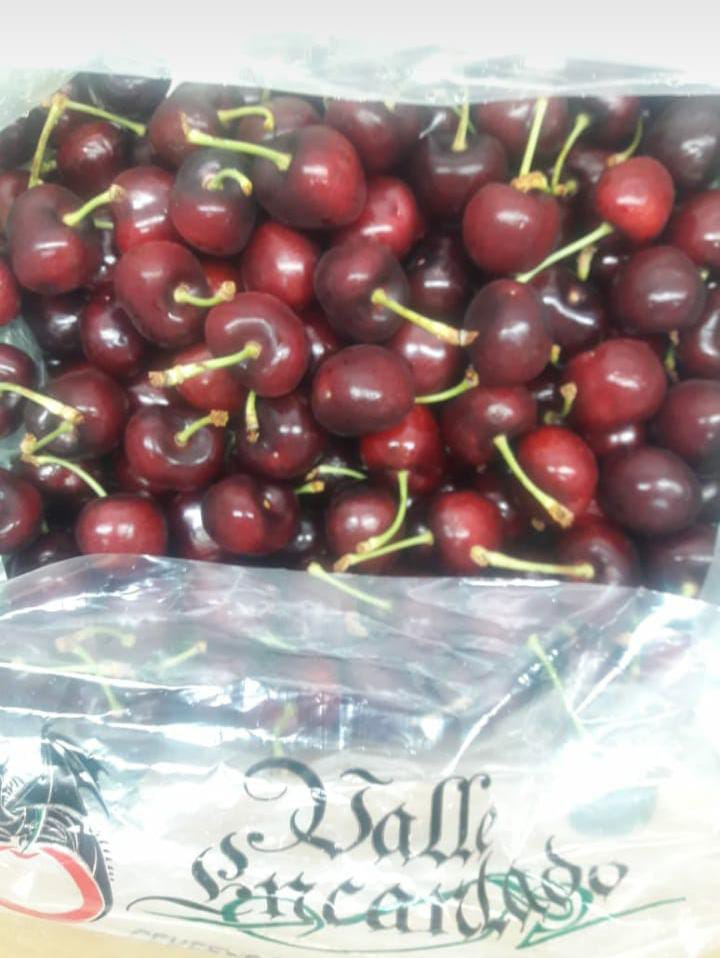

Caja de cerezas x 10Kg
Caja de cerezas premium x 10Kg
Caja de cerezas premium x 10Kg
Valijita de cerezas premium x 5Kg
Somos una empresa familiar cuyos orígenes datan del año 2002 en el valle del Río Chubut más precisamente en la zona denominada Drofa Dulog, distante a 8 km de la ciudad de Trelew en la Provincia del Chubut y en el corazón de la Patagonia.